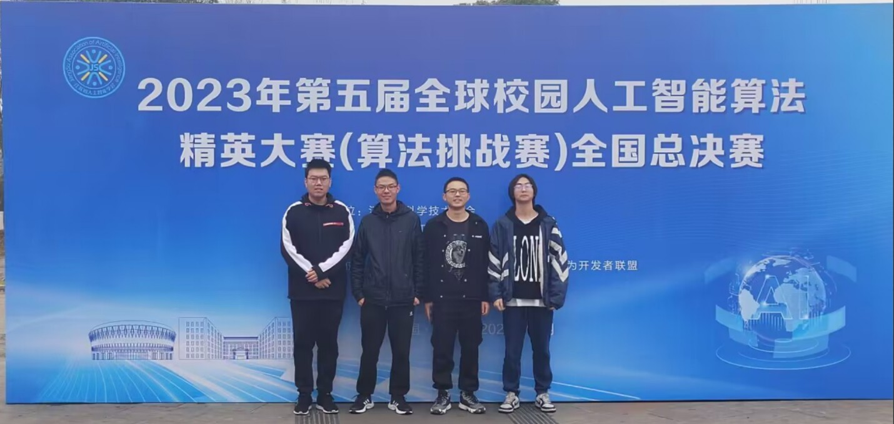
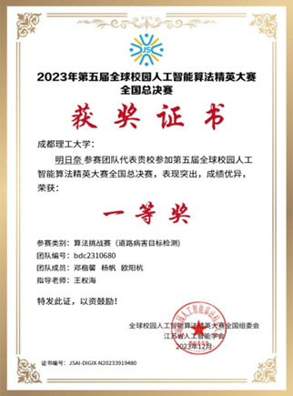
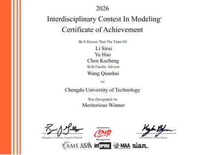
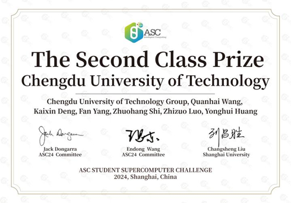

个人简介
王权海，男，苗族，1973年12月生，中共党员，博士，副教授，硕士生导师，成都理工大学计算机与网络安全学院（示范性软件学院）物联网工程系专业教师。主要从事计算机、物联网、人工智能教学与科研工作，发表SCI/EI/中文核心论文10余篇，获发明专利2项，参与编写教材一部；主持参与国家级/省部级项目5项，横向科研项目多项；指导本科生参加学科竞赛获国家级、省级奖100余人次。
王权海，男，苗族，1973年12月生，中共党员，博士，副教授，硕士生导师，成都理工大学计算机与网络安全学院（示范性软件学院）物联网工程系专业教师。主要从事计算机、物联网、人工智能教学与科研工作，发表SCI/EI/中文核心论文10余篇，获发明专利2项，参与编写教材一部；主持参与国家级/省部级项目5项，横向科研项目多项；指导本科生参加学科竞赛获国家级、省级奖100余人次。
学生团队先后斩获国家级一等奖4项、国家级二等奖5项、以及国家级三等奖和省级奖励100余人次。






2017年6月，荣获成都理工大学信息科学与技术学院"优秀共产党员"称号；
2018年7月，荣获成都理工大学"优秀共产党员"称号，并作为先进典型在学校表彰大会上发言；
2018年7月，荣获黑水县委、县政府"对口帮扶干部人才先进个人"称号；
2019年4月，荣获黑水县委、县政府"2018年度脱贫攻坚先进个人"称号；
2021年6月，荣获黑水县委"脱贫攻坚突出贡献"荣誉证书；
2025年9月，荣获成都理工大学"优秀教师"称号。